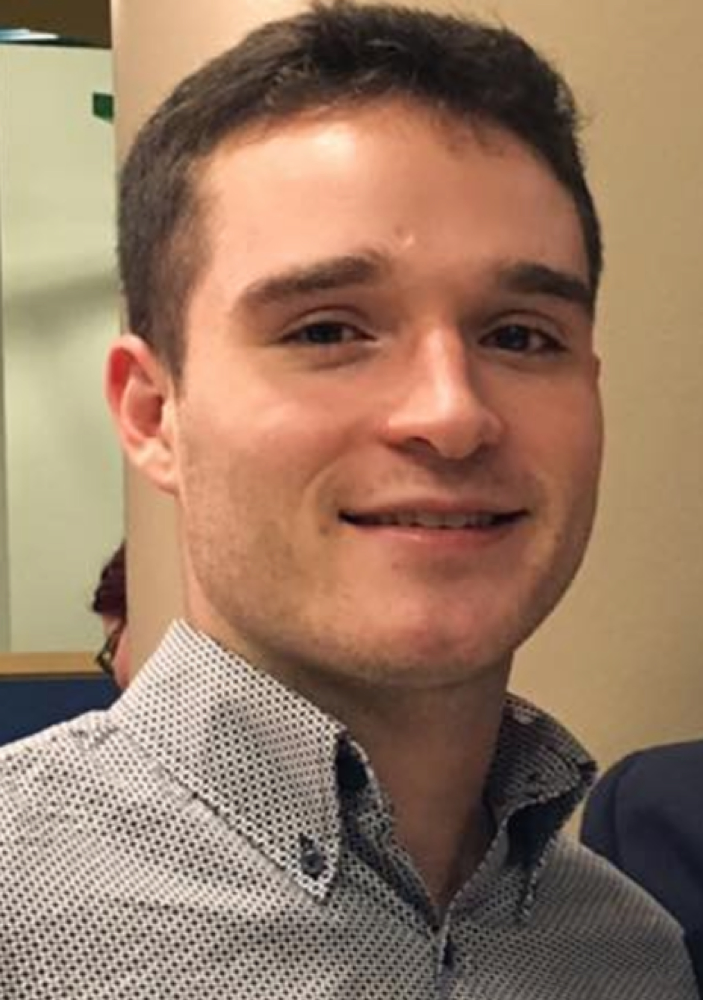
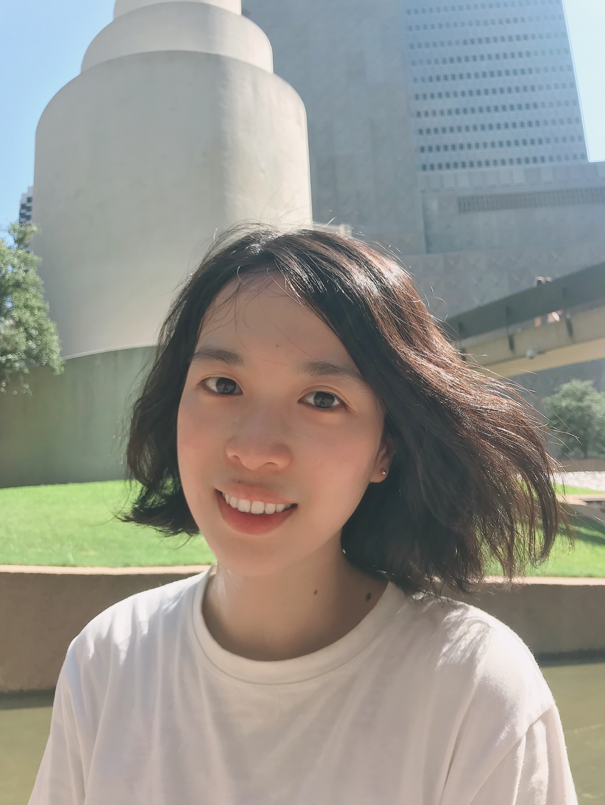
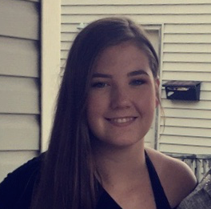

Welcome!
Research in the Hwang lab focuses on the cognitive, neural, and developmental dynamics of cognitive control. You can learn more about our work by reading the research page or publications.
We are located at 355W PBSB.
Announcements
Job Openings03/13/2020
Lab Members
 Kai Hwang, Ph.D.
Kai Hwang, Ph.D.
Lab Director
Assistant Professor, Psychological and Brain Sciences
Email: kai-hwang@uiowa.edu
Kai is a faculty member of Psychological and Brain Sciences, Psychiatry, the Neuroscience Graduate Training Program, the Iowa Neuroscience Institute, and the DeLTA Center.
 Dillan Cellier
Dillan Cellier
Lab Manager & Post Baccalaureate Research Fellow
Email: dillan-cellier@uiowa.edu

Marco Pipoly
Ph.D. Student, Neuroscience
NSF Graduate Research Fellow

Xitong Chen
Ph.D. Student, Psychological and Brain Sciences
Klaudia Golebiewski
Research Assistant
Neuroscience Major
Spenser Pfannenstiel
Research Assistant
Neuroscience Major

Emily Wall
Research Assistant
Human Physiology Major